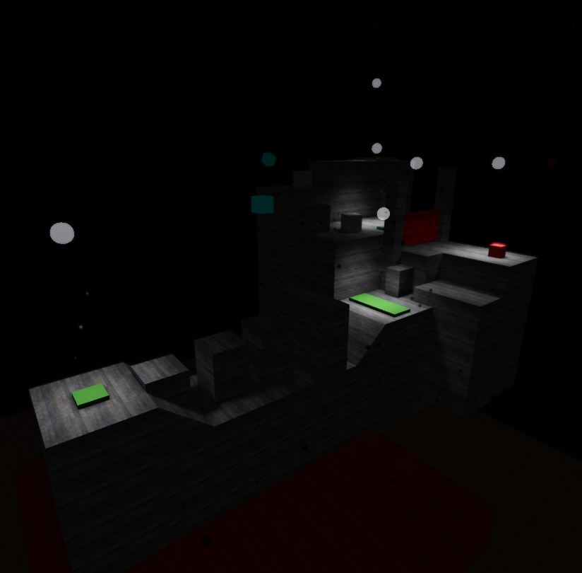
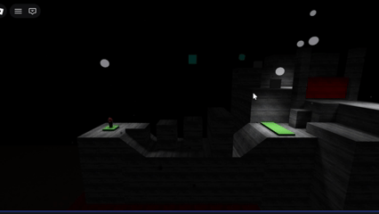

Spotlights
2026-Present, Currently a solo project.
Spotlights is an in-developement 2.5D platformer centered around staying within spotlights and other sources of light to survive and progress. The main gameplay revolves around the varying levels that grow in precision and puzzle, much like Celeste, with varying light mechanics introduced as the game progresses. It is VERY early in development.

